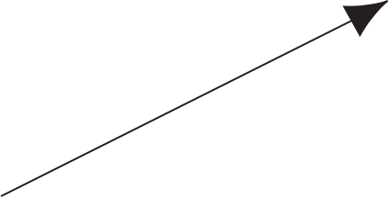

×
Vector addition adds up to four two-dimensional vectors and displays the resultant vector.
- Select "vector addition" from the drop-down menu.
- Drag the vector by its head or tail to move it around on the plot. Coordinates of the head or tail will display near the cursor.
- Hover your mouse over the vector to show its \(\boldsymbol{\hat{\imath}}\) and \(\boldsymbol{\hat{\jmath}}\) components.
- As you move the vector, the matrix above the plot updates.
- To add another vector to the plot, press the "insert vector" button. This will add a vector whose origin is the head of the first vector; its magnitude and direction are random. Up to three vectors can be inserted.
- Press the "sum vectors" button to add the vectors and display the resultant vector. The matrices are added above the plot and the matrix of the resultant vector is shown.
- After you have summed the vectors, the solution to the equation will display above the plot! Press reset to start again.
- Press reset at any time to start over.
Scalar multiplication multiples a vector by a scalar and displays the resultant vector.
- Select "scalar multiplication" from the drop-down menu.
- The origin of the starting vector is fixed at (0, 0). Drag the vector head to move it around on the plot. The coordinates will display near the cursor.
- Adjust the slider "multiply by" to the desired scalar value. The equation above the plot shows the resulting vector if the starting vector is multiplied the slider value.
- Press the "multiply!" button to display the resulting vector. The original vector is shown in transparent blue.
- Hover the mouse over the vector to show the \(\boldsymbol{\hat{\imath}}\) and \(\boldsymbol{\hat{\jmath}}\) components of the vector.
- Press reset at any time to start over.
Dot product calculates the value of the dot product of two three-dimensional vectors.
- Select "dot product" from the drop-down menu.
- Type in (to replace the zeros) the desired \(\boldsymbol{\hat{\imath}}\), \(\boldsymbol{\hat{\jmath}}\), and \(\boldsymbol{\hat{k}}\) component values for the \(\vec{u}\) and \(\vec{v}\) vectors. These values must be real numbers between -999 and +999. Decimal values may only be added to numbers between -99.9 and 99.9.
- The matrix above the canvas updates to match the vectors you have entered.
- Press the "dot product" button and watch the animation. The equation above the canvas shows the result.
- Press the reset button at any time to start over.
Cross product determines the cross-product vector (red), which is normal to the plane containing the two three-dimensional starting vectors (blue and yellow).
- Select "cross product" from the drop-down menu.
- Use the sliders to adjust the \(\boldsymbol{\hat{\imath}}\), \(\boldsymbol{\hat{\jmath}}\), and \(\boldsymbol{\hat{k}}\) components of the \(\vec{u}\) and \(\vec{v}\) vectors.
- Change the view of the plot by holding down the left mouse button and moving the mouse. Zoom in and out with the scroll wheel.
- Translate the plot forward and backward, or side-to-side using the right mouse button.
- Check the "show cross product" box to show the cross-product vector. Check the "show normal plane" box to show the plane formed by the \(\vec{u}\) and \(\vec{v}\) vectors.
×
When vectors are added, the resultant vector is the sum of the individual components of each vector. For example, for these two vectors: $$\vec{u}=2\boldsymbol{\hat{\imath}}+3\boldsymbol{\hat{\jmath}}$$ $$\vec{v}=4\boldsymbol{\hat{\imath}}+7\boldsymbol{\hat{\jmath}}$$ their sum is: $$\vec{u}+\vec{v}=(2+4)\boldsymbol{\hat{\imath}}+(3+7)\boldsymbol{\hat{\jmath}}=6\boldsymbol{\hat{\imath}}+10\boldsymbol{\hat{\jmath}}$$ In matrix notation, this may written either of two ways: $$\vec{u}+\vec{v}=\begin{bmatrix}2 \\ 3 \end{bmatrix}+\begin{bmatrix}4 \\ 7 \end{bmatrix}=\begin{bmatrix}6 \\ 10 \end{bmatrix}$$ $$\vec{u}+\vec{v}=\begin{bmatrix}2 & 3 \end{bmatrix}+\begin{bmatrix}4 & 7 \end{bmatrix}=\begin{bmatrix}6 & 10 \end{bmatrix}$$
Scalar multiplication of vectors multiplies the magnitude of vectors by a scalar quantity without altering the direction of the vector. For example, the 3-dimensional vector: $$\vec{u}=2\boldsymbol{\hat{\imath}}+4\boldsymbol{\hat{\jmath}}+1\boldsymbol{\hat{k}}$$ A scalar multiplication by a factor of 3 yields: $$3\vec{u}=(3\cdot2)\boldsymbol{\hat{\imath}}+(3\cdot4)\boldsymbol{\hat{\jmath}}+(3\cdot1)\boldsymbol{\hat{k}}=6\boldsymbol{\hat{\imath}}+12\boldsymbol{\hat{\jmath}}+3\boldsymbol{\hat{k}}$$ In matrix notation, this can be written two ways: $$3\vec{u}=3\begin{bmatrix}2 \\ 4 \\ 1 \end{bmatrix}=\begin{bmatrix}6 \\ 12 \\ 3\end{bmatrix}$$ $$3\vec{u}=3\begin{bmatrix}2 & 4 & 1 \end{bmatrix}=\begin{bmatrix}6 & 12 & 3\end{bmatrix}$$ In ordered-set notation, it is written as: $$3\vec{u}=3\langle2, 4, 1\rangle=\langle6, 12, 3\rangle$$
The dot product multiplies together the common components of two vectors to yield a scalar value (not a vector): $$\sum_{i=1}^{n}u_{i}v_{i}$$ Where \(u_{i}\) is the component of vector \(\vec{u}\) in the \(i^{th}\) dimension, and \(v_{i}\) is the component of vector \(\vec{v}\) in the \(i^{th}\) dimension. \(n\) represents the total number of dimensions in vectors \(\vec{u}\) and \(\vec{v}\). A dot product can be performed on any two vectors with identical dimensions. For these 3-dimensional vectors: $$\vec{u}=1\boldsymbol{\hat{\imath}}+4\boldsymbol{\hat{\jmath}}+5\boldsymbol{\hat{k}}$$ $$\vec{v}=6\boldsymbol{\hat{\imath}}+3\boldsymbol{\hat{\jmath}}+2\boldsymbol{\hat{k}}$$ Multiply together the components with the same dimension ... $$\vec{u}\cdot\vec{v}=(1\cdot6)+(4\cdot3)+(5\cdot2)=28$$ Note that orthogonal vectors have a dot product of zero:
 $$\vec{u}=-4\boldsymbol{\hat{\imath}}+2\boldsymbol{\hat{\jmath}}$$
 $$\vec{v}=1\boldsymbol{\hat{\imath}}+2\boldsymbol{\hat{\jmath}}$$
$$\vec{v}=1\boldsymbol{\hat{\imath}}+2\boldsymbol{\hat{\jmath}}$$The direction of the cross-product obeys the right-hand rule, and its magnitude is dependent on the magnitude of the two vectors, as well as the degree of orthogonality between them.
The definition of the cross-product is: $$\vec{u}\times\vec{v}=\| \mathbf{u} \|\| \mathbf{v} \|\sin(\theta)\mathbf{n}$$ Where \(\|\mathbf{u}\|\) and \(\|\mathbf{v}\|\) are the magnitudes of vectors \(\vec{u}\) and \(\vec{v}\), \(\theta\) is the angle created by the intersection of the two vectors, and \(\mathbf{n}\) is the vector normal to the plane created by the two vectors. Because \(\sin(0°)=0\) and \(\sin(90°)=1\), vectors with high orthogonality will create cross product vectors with higher magnitude than those with low orthogonality.
The cross product of \(\vec{u}\) and \(\vec{v}\): $$\vec{u}=u_{1}\boldsymbol{\hat{\imath}}+u_{2}\boldsymbol{\hat{\jmath}}+u_{3}\boldsymbol{\hat{k}}$$ $$\vec{v}=v_{1}\boldsymbol{\hat{\imath}}+v_{2}\boldsymbol{\hat{\jmath}}+v_{3}\boldsymbol{\hat{k}}$$ can be calculated through the determinant: $$\vec{u}\times\vec{v}= \begin{vmatrix} \hat{\imath} & \hat{\jmath} & \hat{k} \\ u_{1} & u_{2} & u_{3} \\ v_{1} & v_{2} & v_{3} \end{vmatrix}$$ This results in: $$\vec{u}\times\vec{v}=(u_{2}v_{3}-u_{3}v_{2})\boldsymbol{\hat{\imath}}+(u_{3}v_{1}-u_{1}v_{3})\boldsymbol{\hat{\jmath}}+(u_{1}v_{2}-u_{2}v_{1})\boldsymbol{\hat{k}}$$ Or in matrix notation: $$\vec{u}\times\vec{v}=\begin{bmatrix} u_{2}v_{3}-u_{3}v_{2} \\ u_{3}v_{1}-u_{1}v_{3} \\ u_{1}v_{2}-u_{2}v_{1} \end{bmatrix}$$
×
This simulation was created in the Department of Chemical and Biological Engineering, at University of Colorado Boulder for LearnChemE.com by Neil Hendren under the direction of Professor John L. Falconer. Address any questions or comments to learncheme@gmail.com. All of our simulations are open source, and are available on our LearnChemE Github repository.
If this simulation is too big for your screen, zoom out using  +
+  on Mac or
on Mac or  + on Windows. To zoom in, use +
+ on Windows. To zoom in, use +  on Mac or + on Windows.
on Mac or + on Windows.